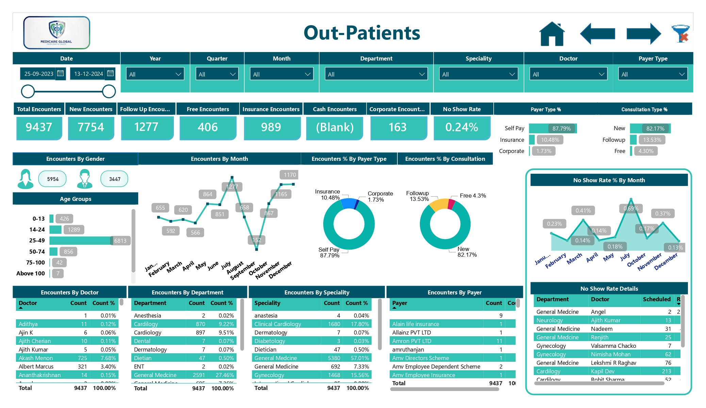
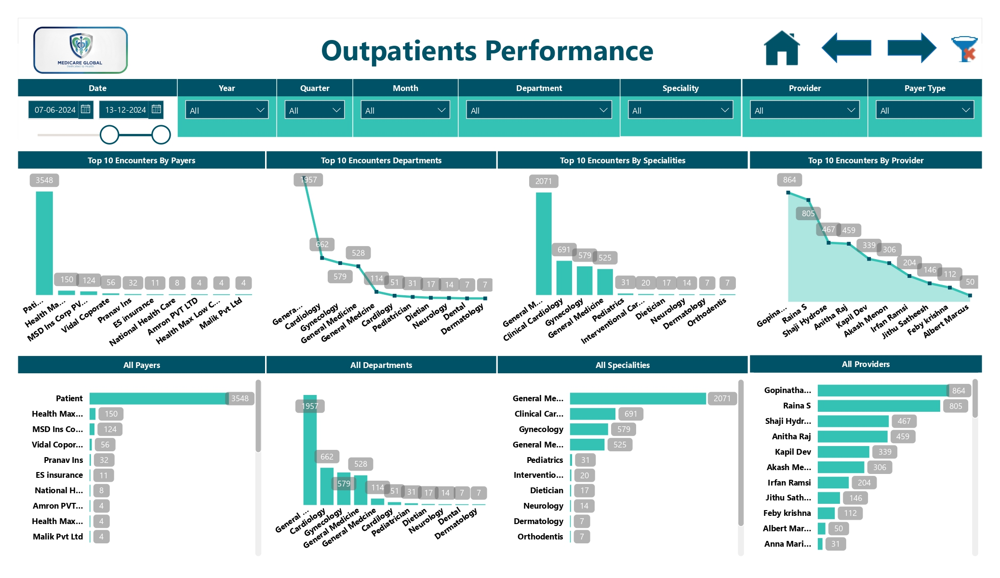
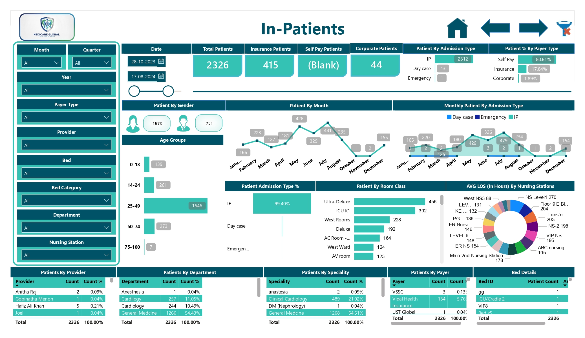
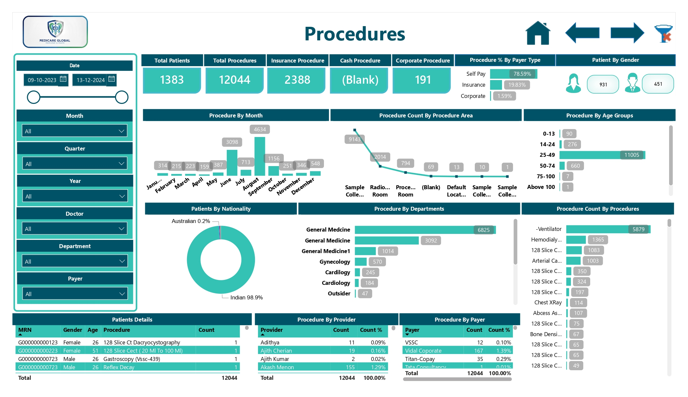
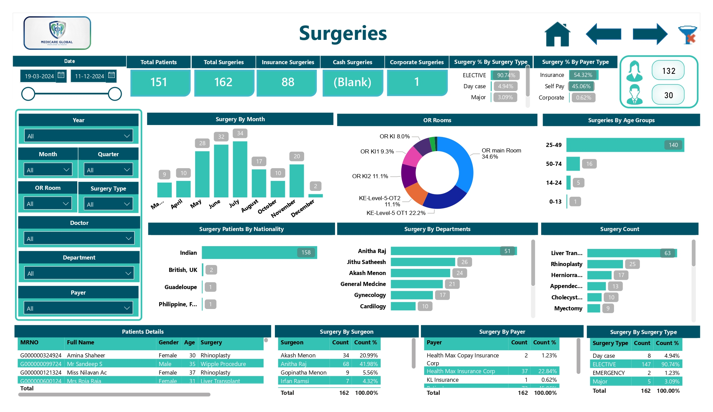
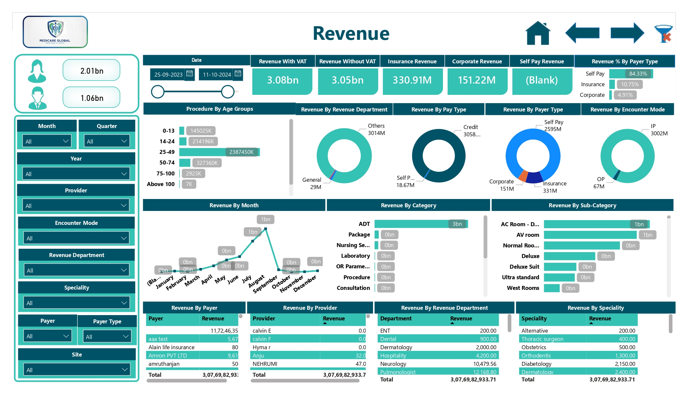

Operational Bottlenecks & Capacity Issues
Limited visibility into patient throughput across Out-Patient, In-Patient, and Emergency departments complicated bed management, discharge planning, and resource optimization.
Designed and developed the Medicare Global Healthcare Analytics Suite as a centralized strategic intelligence hub embedded within the YASASII Hospital Information System, transforming raw PostgreSQL data into actionable operational, clinical, and financial insights.
Hospital administrators and clinical leaders lacked a unified view of operational performance, clinical workflows, and revenue because data remained siloed across the Hospital Information System.
Limited visibility into patient throughput across Out-Patient, In-Patient, and Emergency departments complicated bed management, discharge planning, and resource optimization.
Outpatient No Show trends were not visible enough to support corrective scheduling, reminders, or controlled over-booking strategies.
Financial leaders lacked automated insight into payer mix, revenue drivers, and service-specific financial performance.
Surgery and procedure volumes were disconnected from Operating Room, Nursing Station, and Length of Stay analysis, limiting effective asset and staffing decisions.
A centralized Power BI analytics suite was architected and embedded directly into the multi-tier YASASII HIS environment.
Designed vwoppbi, vwippbi, vwprocedurespbi, vwrevenuepbi, and vwsurgerypbi to aggregate, clean, and format billing, scheduling, registration, admission, procedure, and surgery data.
Handled Length of Stay, bed-category classification, payer normalization, and complex business rules at the database and transformation layers.
Tracked New versus Follow-up visits, demographic patterns, doctors, specialties, payer types, and No Show performance.
Built bed-occupancy views and Average Length of Stay analytics across Room Classes and Nursing Stations.
Mapped intervention volumes, surgery types, departments, providers, and physical Operating Rooms.
Analyzed revenue with and without VAT, payer mix, encounter mode, departments, providers, specialties, and service categories.
Implemented DAX and Power Query logic with global filtering by Date, Department, Provider, Specialty, Payer Type, and site.
Integrated the analytics suite directly into the YASASII Hospital Information System for seamless operational access.
Millions of raw PostgreSQL records were transformed into a single source of truth covering core medical directorates and hospital operations.
The platform revealed the dominant payer segment, giving leadership a clear basis for pricing, collection, and financial strategy.
Demographic analysis exposed the primary patient segment, supporting better staffing and service-planning decisions.
Clinical leaders gained precise visibility into top-performing specialties such as General Medicine and Cardiology, along with beds, rooms, nursing stations, and operating theaters.
The suite showed that Bed and Room allocations (ADT) were primary revenue drivers compared with laboratory and clinical-procedure categories.
Month-by-month No Show visibility enabled actionable reminder, scheduling, and over-booking interventions to maximize doctor-slot utilization.
Hospital leadership gained one trusted reporting environment across operational, clinical, and financial domains.
A centralized analytics architecture converts HIS transactions into embedded operational, clinical, and financial intelligence.
Clinical, operational, scheduling, and billing transactions
PostgreSQL views aggregate and standardize data
Power Query applies shaping and business rules
DAX calculates hospital KPIs and filters
Interactive dashboards embedded in YASASII HIS
The analytics flow moves hospital transactions through governed SQL and semantic modeling into decision-ready dashboards.






Replace this placeholder with the public Power BI embed URL after publishing the report.
Replace this generic YouTube URL after publishing the walkthrough.
The repository contains project documentation, dashboard screenshots, technical implementation details, and supporting analytics assets.
Discover more enterprise data transformation and healthcare analytics projects.